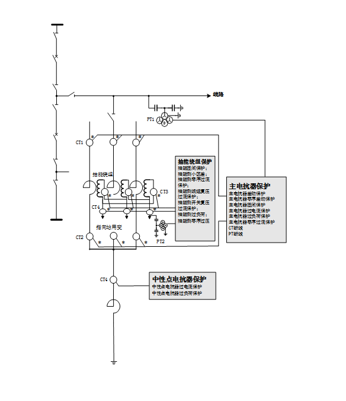
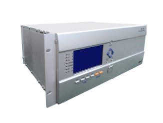
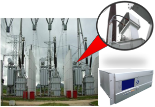

随着我国超高压长距离输电线路的增多，抽能高压并联电抗器在开关站得到广泛应用。抽能高压并联电抗器不仅具有普通高压并联电抗器的补偿线路功能，还带有“抽能绕组”可作为开关站站用变的主供电源，具有很好的经济效益。
北京四方公司系统地研究了抽能高压并联电抗器的结构、电气特性、系统侧的复杂扰动对继电保护的影响，在国内外首创了500kV抽能高压并联电抗器抽能绕组匝间保护等一系列保护方法，研制了具备抽能侧完备保护功能的CSC-330A超高压抽能高抗保护，主要适用于220kV～1000kV变电站带抽能绕组的高压并联电抗器，解决了绕组间弱耦合、抽能匝间保护灵敏度低、系统侧复杂扰动等难题，填补了国内外本项技术的空白，并率先实现了500kV系统重大工程的应用。
CSC-330A超高压抽能高抗保护所配置的主要电气量保护功能包括：

图1 抽能高压并联电抗器保护系统配置图
北京四方公司的超高压抽能高抗保护设备已在国内多个项目中得到应用，涉及藏中联网、中国-老挝联网及南方主网和海南电网联网等重大工程。设备自投运以来，未发生任何异常情况，运行状态稳定、可靠。


图2 抽能高抗保护及工程应用示例